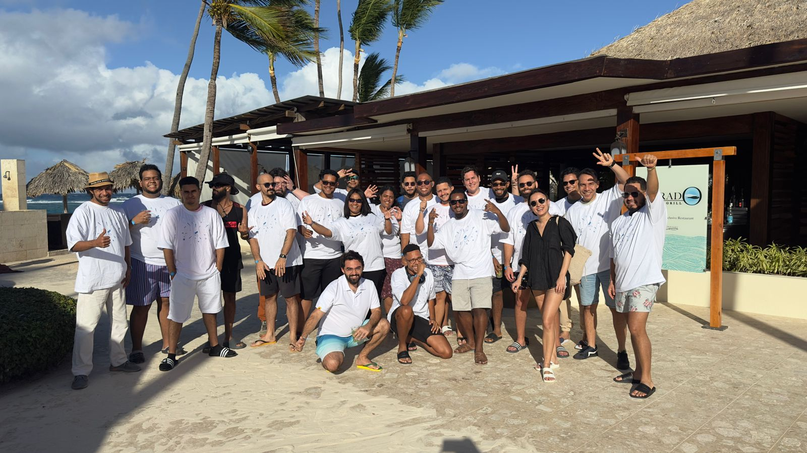
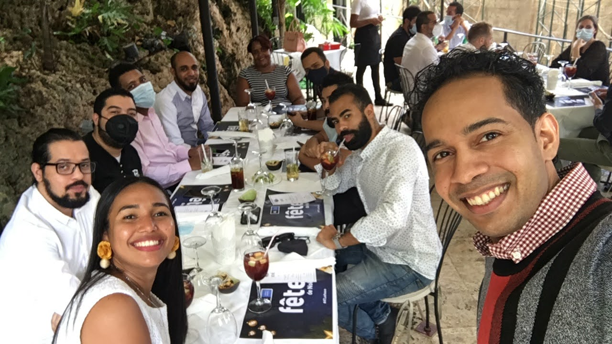
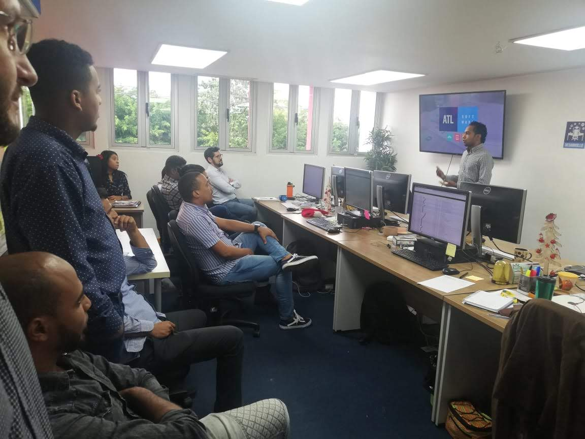

Eliezer De León
location_on
Santo Domingo, Dominican Republic
email
eliezer.deleon1@hotmail.com
 Linkedin
Linkedin
 Youtube
Youtube
Summary
I am a QA software engineer with over 4 years of experience in software QA, complemented by a solid foundation
in technical support and help desk roles spanning 12 years from 2008 to May 2020. Proficient in both English and
Spanish, my passion lies in providing exceptional service, working effectively in teams, and leveraging analytical
thinking to drive success.
Experience
Software QA at Flatiron Software Co
Oct 2021 - Present (2 years 8 months)

- Test endpoints using Postman and HTTP Toolkit
- Manage test suites using QA Deputy.
- Validate, create, and manage bugs using Jira.
- Participate in daily scrum calls with the team (Product, Dev, QA, UAT).
- Test mobile applications based on Flutter and React.
- Perform regression tests before any version release.
- Use WordPress for configuring test cases and app configurations.
Educational Content Creator in Mathematics and Informatics at Youtube.
Jan 2014 - Present (10 years 5 months)
Teaching students the skills of the mathematical sciences (Basic Mathematics, Higher Mathematics for Engineering, Linear
Algebra, Calculus and Analytical Geometry, Discrete Mathematics), as well as the computer science area (Programming
, Computer Networks, Base of Data, Algorithms, among others).
Currently having the approval of 130,000 subscribers,
including students and faculty from universities in
Latin America.
Please visit my youtube channel here:
http://youtube.com/c/EliezerDeLeon
Software Quality Assurance Analyst at ATL Software
May 2020 - Apr 2022 (2 years)

- Used Jira for bug creation, management, and follow-up.
- Utilized Trello for features validation in new projects.
- Conducted testing on web, desktop, and mobile applications.
- Employed MySQL for managing database data to configure test cases.
- Tested CRM environment with sandbox payments and payment methods
- Trained new QA employees on processes and prepared them for integration into the company's work
routine.
- Worked with continuous integration tools such as TeamCity.
Customer Support Specialist at ATL Software
May 2019 - May 2020 (1 year)

Skills and Tools
- QA Automation
- Selenium
- Java
- Cucumber
- Behavior-Driven Development (BDD)
- Reporting
- Locators
- XPath
- Error Handling
- TeamCity
- MySql
- SQL
- Analyze and Interpret Data
- Git
- Agile
- Jira
- Slack
- VSCode
- Wordpress
- Postman
- API Testing
- Endpoint Testing
- Jmeter
Education and Certifications
- QA Automation - Udemy
- System Engineering - Universidad APEC
- Programming for Testers - Udemy
- English as second language
- C# - SoloLearn
- SQL Fundamentals - SoloLearn
- Customer Service - Stream Global Services
- Networking Fundamentals - Cisco Networking Academy
- Visual Basic - INFOTEP
- Access - INFOTEP
Languages
- English (Advanced)
- Spanish (Native)
- French (Basic)